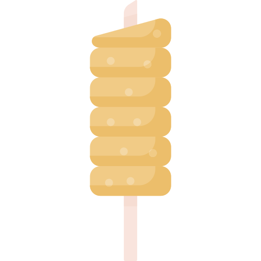

ğŸ‡ğŸ‡º KürtÅ‘skalács ğŸ‡ğŸ‡º
Kürtőskalács is a spit cake specific to Hungarians from Transylvania, more
specifically the Székelys. Originally popular in the Hungarian-speaking
regions of Romania, more predominantly the Székely Land, it became popular
in both Hungary and Romania.